Client Project — Cardtonic
Sending Money To People, Not Accounts
Cardtonic is a fintech product people rely on every day, and it was exploring Peer-to-Peer money transfers — letting users send directly to other Cardtonic users. The open question: how do you build enough confidence for that to work at scale (1,000,000+ users), when the money moves instantly and can't be recalled?
I designed an end-to-end P2P transfer flow where verifying the recipient comes before entering the amount — addressing three anxieties research kept surfacing: trust, simplicity, and speed.
Introduction · Background
Cardtonic builds financial products people rely on every day, and was exploring the introduction of Peer-to-Peer money transfers — letting users send money directly to other Cardtonic users. Users needed a way to do that with enough confidence and trust for transactions at scale (1,000,000+).
“How do users find the right recipient? How do we prevent sending to the wrong person? How do we make it feel fast without cutting corners on security?”
Design Task: design an end-to-end peer-to-peer mobile money transfer experience. Research showed the solution needed to address three core anxieties.
- 01 Trust Am I sending this to the right person?
- 02 Simplicity Every reassurance is another screen, another decision.
- 03 Speed The fiftieth send should take three taps, not nine.
Discovery · The Challenge
Three tensions every peer transfer has to resolve, and how I approached solving them.
Speed vs Security
A million naira deserves friction. Two thousand does not. One flow has to carry both.
Verify The Person
Identity is confirmed before an amount is entered — settlement is instant within the Cardtonic ledger, with no pending state.
Confidence vs Simplicity
Every reassurance is another screen. Too many, and the reassurance itself reads as risk.
Confirm Instantly
The recipient is confirmed before a number is typed; because both parties are on Cardtonic, verification is fast.
First-Time Trust vs Repeat Trust
The first send needs explaining. The fiftieth needs to be three taps.
Error States & Review
One question per screen. Errors explain the ceiling and offer a way past it; review highlights the recipient so a typo is seen, not overlooked.
Discovery · Non-Negotiables
Assumptions that affect security, safety, and where the design could fail — and what breaks if they turn out wrong.
Only Cardtonic Users Can Receive Funds
Why: keeps both legs in one ledger and avoids external KYC.
If wrong: external rails would reintroduce a pending state and change the architecture.
Tier Limits Are For Risk Management
Why: caps daily exposure per account.
If wrong: must be explained, not enforced silently — why the explainer sheet exists.
Settlement Is Instant
Why: uses the internal ledger, not a bank rail.
If wrong: success would need a pending state, changing the final screen.
Contacts Permission Can Be Granted
Why: speeds discovery for first-time sends.
If wrong: fallback is username and phone search only.
PIN Or Biometric Is Enough
Why: matches the current Cardtonic standard.
If wrong: a 1,000,000 transfer may need step-up authentication, which isn't designed here.
Repeat Sends Make Up Most Volume
Why: recent recipients lead the search.
If wrong: recent becomes wasted space above the fold.
Recommendation
Cardtonic must be safe, secure, and compliant with regulations as a fintech solution.
Discovery · Market Research
How Kuda, GTBank, Access Bank, Pocket App, and PalmPay handle peer-to-peer transfers.
Key Insight
Most competitors optimise for speed through saved beneficiaries and contact sync. Few address recipient-verification anxiety, and limits are enforced silently rather than explained — exactly where this design differentiates.


Discovery · Design System
All UI values use Figma variables or shared styles. 25+ components, built with Auto Layout, variants, and bound variables — shared across both flow options.
Colour
navy
#002444
navy-light
#092443
cyan
#00CDDE
cyan-light
#BFF3F7
green
#25CE7B
green-text
#177F4C
red
#EF4D27
orange
#FF8058
purple
#7580EF
grey-border
#C2E6ED
grey-surface
#F2F3F5
grey-text
#646B78
Typography · Eina01
Components
25+
Built with Auto Layout, variants, and bound variables — shared across both options.
Button
3 styles, 4 states each.

Input Field
5 states, from empty to error.

Recipient Row
4 states, including invite.

Error Box
4 types, colour-coded by severity.

Key Decision · Where Does P2P Live?
Same flow, two entry points — which one serves trust, simplicity, and speed best.
Option A · Service Tile
P2P lives as a Home tile, sharing the Buy Gift Card mental model. Navigation stays unchanged; history reuses Transactions, no new surface added.
Strengths: discoverable in a familiar place, consistent with existing architecture, fast entry for new users.
Trade-offs: no dedicated space for history, repeat users lose optimisation.
Option B · Dedicated Nav Tab
Home | Wallet | P2P | Transactions | Settings. P2P becomes a visible ecosystem with room for history, groups, requests, and invites.
Strengths: treated as a first-class feature, room for repeat-user optimisation, dedicated transaction history.
Trade-offs: nav bar gets busier (5 tabs), slightly higher interaction cost.


The Decision
Option A is preferred — it requires fewer steps and focuses solely on sending money.
Solution · Option A: P2P Service Tile
Fast entry from Home into recipient search, balancing trust, safety, and speed.
The Flow · Seven Steps
Entry point is the Home tile instead of a hub — optimised for first-time and casual users, and for the fast path when the destination is already known.
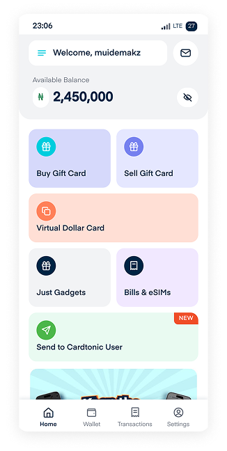
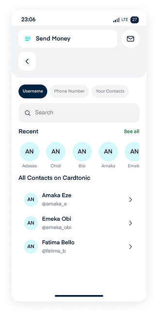
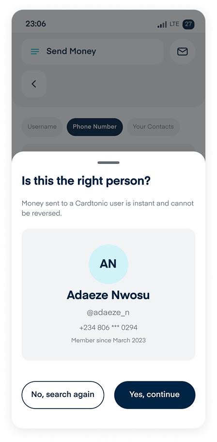
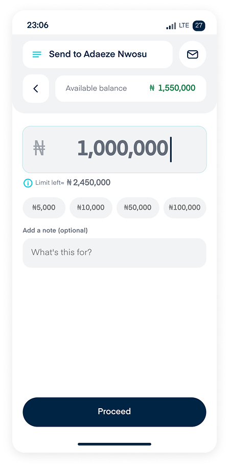
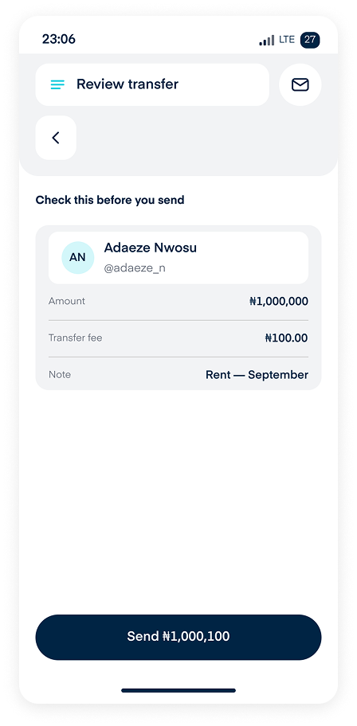
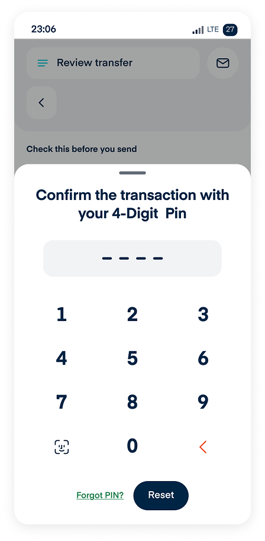
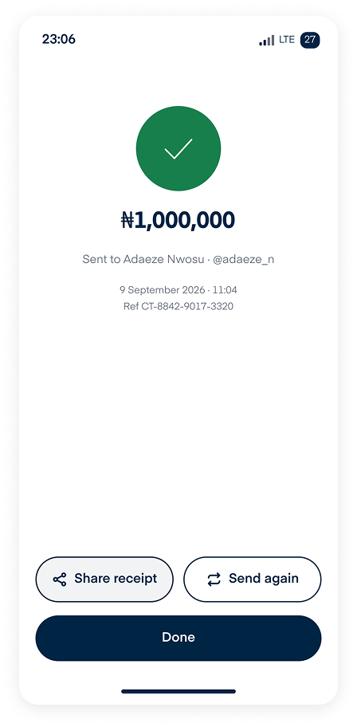
Solution · Trust Moments
The two screens that decide whether 1,000,000 is sent. This speaks directly to trust and speed.
Verify
Avatar at 80 and full legal name as the largest element — the failure mode is a correct username on the wrong person. Masked phone and account age provide two independent recognition cues. No recipient tier is shown: limits are sender-side, so showing the receiver's tier would imply it affects the outcome.
Final Sanity Check
The recipient sits in a highlighted container so a wrong name is seen, not read past. Balance-after-transfer answers the last question before confirming. Nothing on the screen is tappable except back, edit, and confirm.
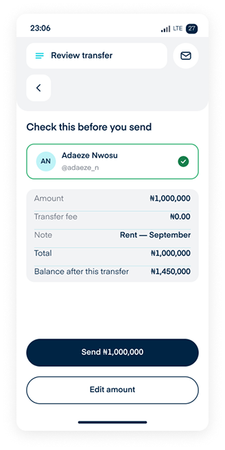
Key takeaway: helping users notice the transaction is irreversible, and having them confirm details before entering an amount and again after.
Solution · Amount Entry
Normal and over-limit states differ only by the error box. This speaks to simplicity and speed.
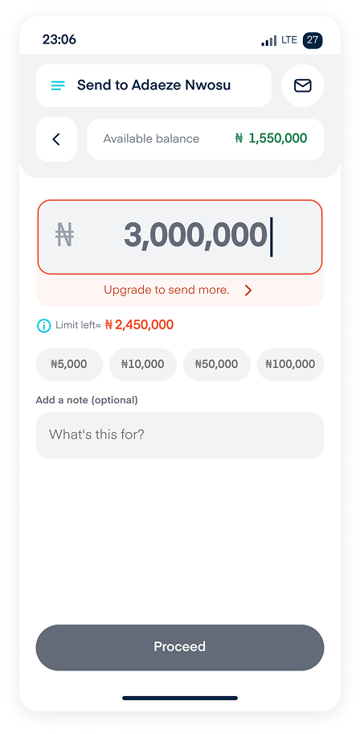
Balance lives in the header, matching Add Bank Account, so the amount field stays clean. Quick chips cover common amounts; the tier limit is visible with an info icon. Review enables as soon as the amount is valid. Over the ceiling, the amount stays editable and keeps its value — only Review is disabled, and the chevron opens the tier sheet so the limit can be reviewed, not just accepted.
Key takeaway: a tier ceiling the user can review reads as a choice, not a block — that's why the error offers an upgrade path instead of a dead end.
Solution · Secure & Success
Safe, secure, and instant confirmation. This speaks to trust and security.
Payment can only be initiated with the user's transaction PIN, with biometrics available once enabled in settings. There's no pending state — both parties are on Cardtonic, so there's nothing to settle. The reference number sits on screen, not buried in a receipt: it's what users quote for support. Send again is offered because repeat transfers are common.
Key takeaway: a secure, decisive success screen is what builds trust with users.
Solution · Edge Cases & Error Handling
Failure states were designed to build trust, not erode it.
Low Balance & Limit
An indicator of the user's limit and a CTA to help them upgrade to their max.
Unlock Tier
Lets the user know which tier they're on and which one is next.
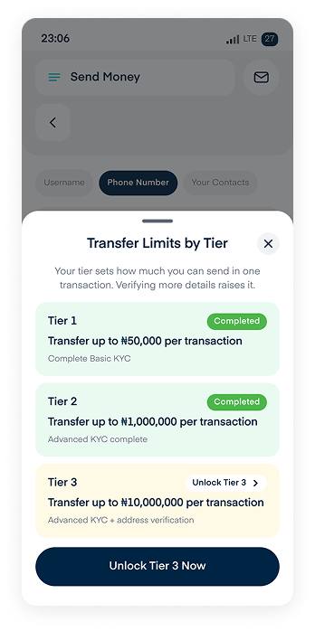
Account Restricted
Tells the user the recipient is on a watchlist or being restricted, without exposing why.
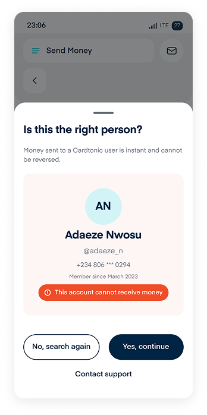
Invite Contact
Users can invite others to Cardtonic, with an incentive attached to encourage it.
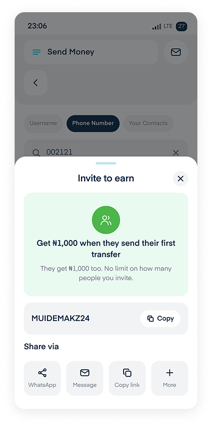
No Search Results
Turns a dead end into network growth with an invite.
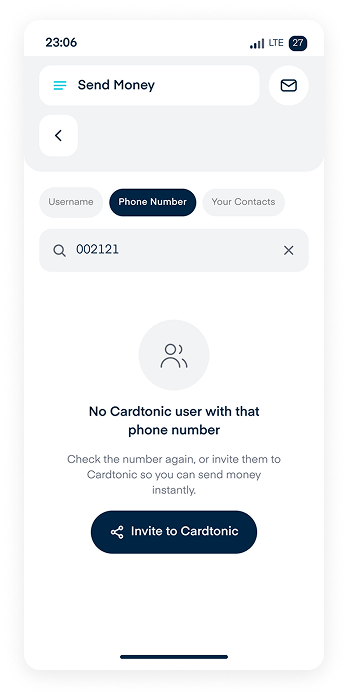
Contact Sync
Contacts are matched against Cardtonic accounts; nothing is uploaded, and the flow keeps working if permission is declined.
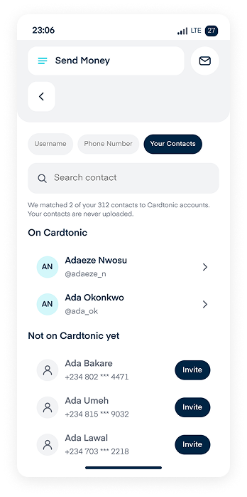
Error Principle
Reassure first, explain second, direct third — and never leave the user wondering where their money is.
Solution · Micro-Interactions & Feedback
76 wired connections. Motion clarifies state; it never decorates.
Review Button
Enabled when the amount is valid; the label explains why when disabled.
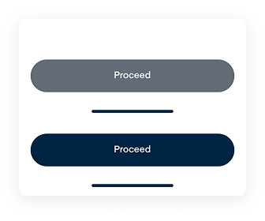
PIN Entry
Dots fill on each keypress; errors shake the field and show remaining attempts.
Skeletons
Match the real row and card shape so content lands without shifting.
Toast
Reserved for reversible events; a 1,000,000 transfer gets a full screen, not a toast.
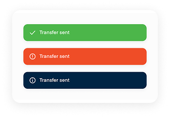
Key takeaway: user delight is always worth it — micro-interactions were introduced to give users delight, not to slow them down.
Outcome · Usability Insight
Usability testing showed that separating Review from PIN authorisation was less risky than combining them.
What Went Wrong
Users still had doubts when PIN was the final step. There was no review before authorising, so irreversibility anxiety lasted until the very end.
What It Fixed
Review became a final sanity check before the point of no return — recipient, amount, fee, and remaining balance all visible. PIN turned into lightweight auth, not a decision moment.
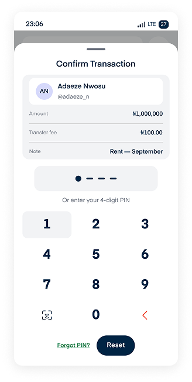
Separating Review and PIN was not in the original design. Validation showed it was the single change most responsible for user confidence.
Conclusion
The P2P design trades a single transfer screen for a verification-first flow: confirm the recipient, enter the amount, review, then authorise — one extra step, but zero ambiguity at the point of no return, which matters for users sending up to 1,000,000.
Tier limits stay consistent across both entry points — soft errors with an upgrade path, not hard blocks. The verification card and tier explainer exist for the same reason: users should always see who's receiving the money, and always have a way to understand their limits.
Wallet-Centric Hub
Embed P2P sending within a unified balance, people, and history view so it feels like part of managing money, not a separate detour.
Verification First
Identity is confirmed before the amount is entered, so the irreversible decision is made while the stakes are still abstract.
Limits As Progress
When a user hits a limit, name the specific cap and surface the upgrade path in the same moment — turning the barrier into a conversion opportunity.
Repeat Users Rewarded
Recent recipients lead search and history, so frequent senders complete a transfer in three taps instead of nine.

What Would Prove This Wrong
The soft tier limits and optional note field are informed assumptions, not confirmed data — both need validating against real usage before this ships. I'd measure time-to-transfer, confidence at review, tier-limit recovery rate, and drop-off at the review screen.
Other Projects